01
Unity
Life is interconnected. So is the way we live.
Our thoughts, emotions, health, relationships and responsibilities influence one another. Recognising these connections helps us understand everyday life more clearly.
Your habits, thoughts, responses, daily duties and relationships influence one another. We begin with your present reality and connect awareness, knowledge, clarity, acceptance and self-regulation with actions you can practise in life.
Explore the original inquiryOur experiences, understanding and actions are connected. Explore eight perspectives that encourage observation, clarity and meaningful participation in everyday living.
Life is interconnected. So is the way we live.
Our thoughts, emotions, health, relationships and responsibilities influence one another. Recognising these connections helps us understand everyday life more clearly.
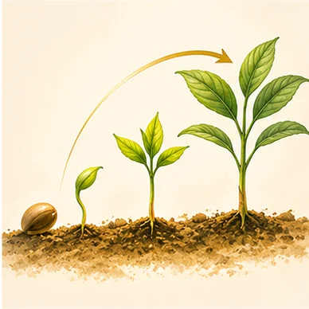
What we understand matters in how we live.
Knowing what is appropriate and putting it into practice are not always the same. Observing this relationship helps us bring understanding into our actions.
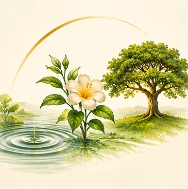
Three qualities for meaningful participation.
Presence brings attention to what we do. Passion supports genuine involvement, while patience allows us to continue learning without expecting immediate results.
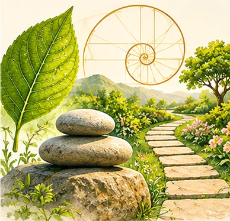
Nature • Science • Yoga Philosophy • Practical Experience
We observe nature, consider scientific evidence, explore yoga philosophy and reflect on practical experience to develop understanding that can inform everyday living.
Responsibility • Clarity • Self-Regulation • Self-Realisation • Present-Moment Focus
These principles encourage us to recognise our responsibilities, understand our circumstances, regulate our responses, examine ourselves and attend to what matters now.
Understanding becomes meaningful in everyday practice.
Daily responsibilities, physical activity, food and self-care, emotional awareness, participation with others and philosophical inquiry offer opportunities to apply what we learn.
One life, many interconnected dimensions.
Physical, mental, emotional, relational, social, spiritual and environmental well-being can influence one another. Recognising these dimensions helps us see our lives more fully.
Explore how we respond and participate in life.
Karma (Duty), Awareness, Acceptance, Reality, Surrender, Gratitude, Consistency and Dharma (Righteousness) invite reflection on action, circumstances, appreciation and responsibility.
A person is not simply a body to train. Sleep, nourishment, movement, thoughts, emotions, relationships, values and daily duties influence one another. Physical transformation can be one goal within a wider lifestyle programme.
We begin by observing the participant’s present reality, personal goals, responsibilities, abilities and relevant limitations. Training then draws on mindfulness, reflection, practical routines, suitable movement and personal review—not a fixed programme for everyone.
We teach for practical capability and independent continuity, rather than dependence on a teacher.
These are four sources that inform our guidance, not four separate services. We connect them with your present needs, capabilities, responsibilities and everyday experience. No single method is assumed to suit everyone.
We observe the natural conditions around everyday living: daylight, surroundings, food availability, activity and rest. We consider how these relate to your routine rather than asking you to follow an idealised lifestyle.
We use evidence-informed learning about sleep, nutrition, movement, recovery and behaviour. Where research has limitations, we distinguish established knowledge from emerging ideas or personal observation.
Yoga philosophy offers a systematic inquiry into attention, breath, awareness, acceptance, responsibility and conscious action. Its teachings can be studied, observed and applied through suitable practices in everyday living.
You learn by observing, trying suitable practices, reflecting on what happens and making appropriate adjustments. Family, work, available time and individual capacity all matter when deciding what can continue.
The K-Lifestyle Framework™ recognises seven interconnected dimensions of well-being: physical, mental, emotional, relational, social, spiritual and environmental. These dimensions influence how we live, relate, work, participate in our surroundings and respond to everyday responsibilities.
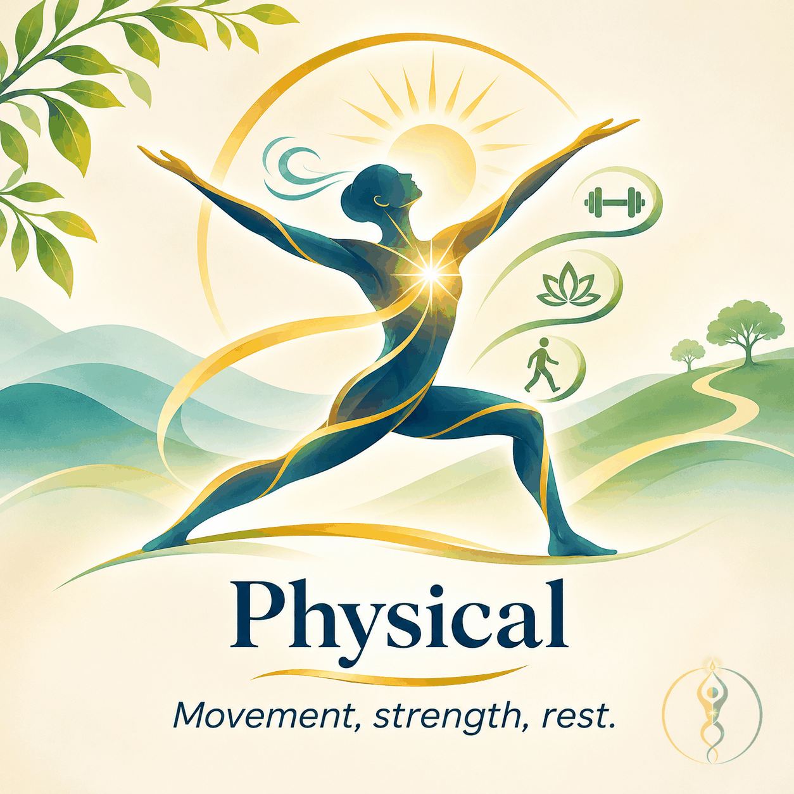
How we move, rest, nourish ourselves and respond to the needs and capabilities of our bodies.
How does my present routine support my physical needs?
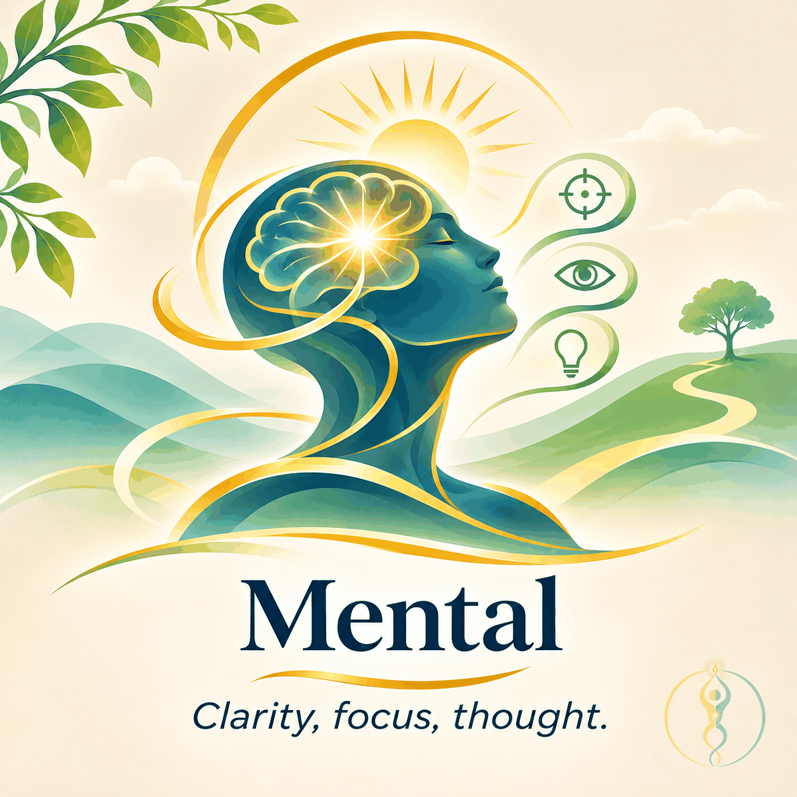
How we notice our thoughts, direct attention, learn, make decisions and maintain clarity amid responsibilities.
What is guiding my attention and decisions today?
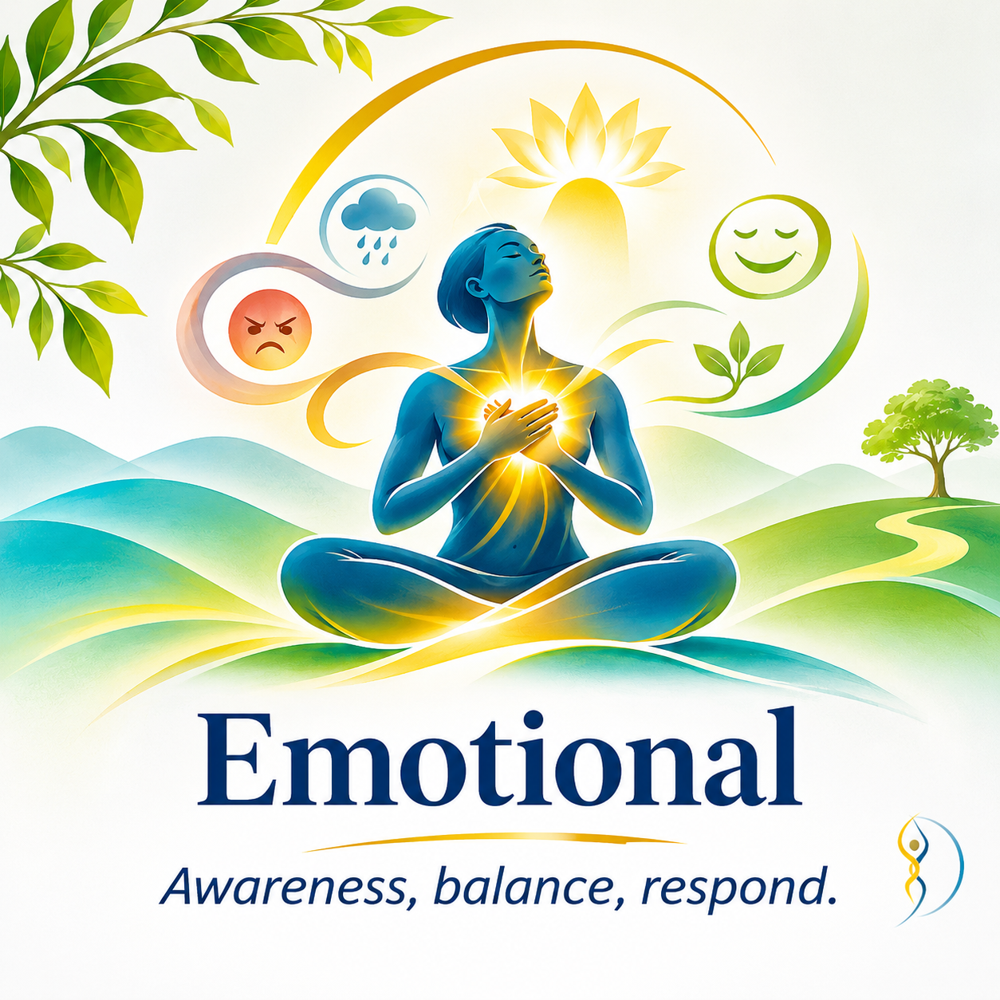
How we recognise feelings, accept their presence and respond appropriately rather than reacting automatically.
Can I observe my feelings before deciding how to act?
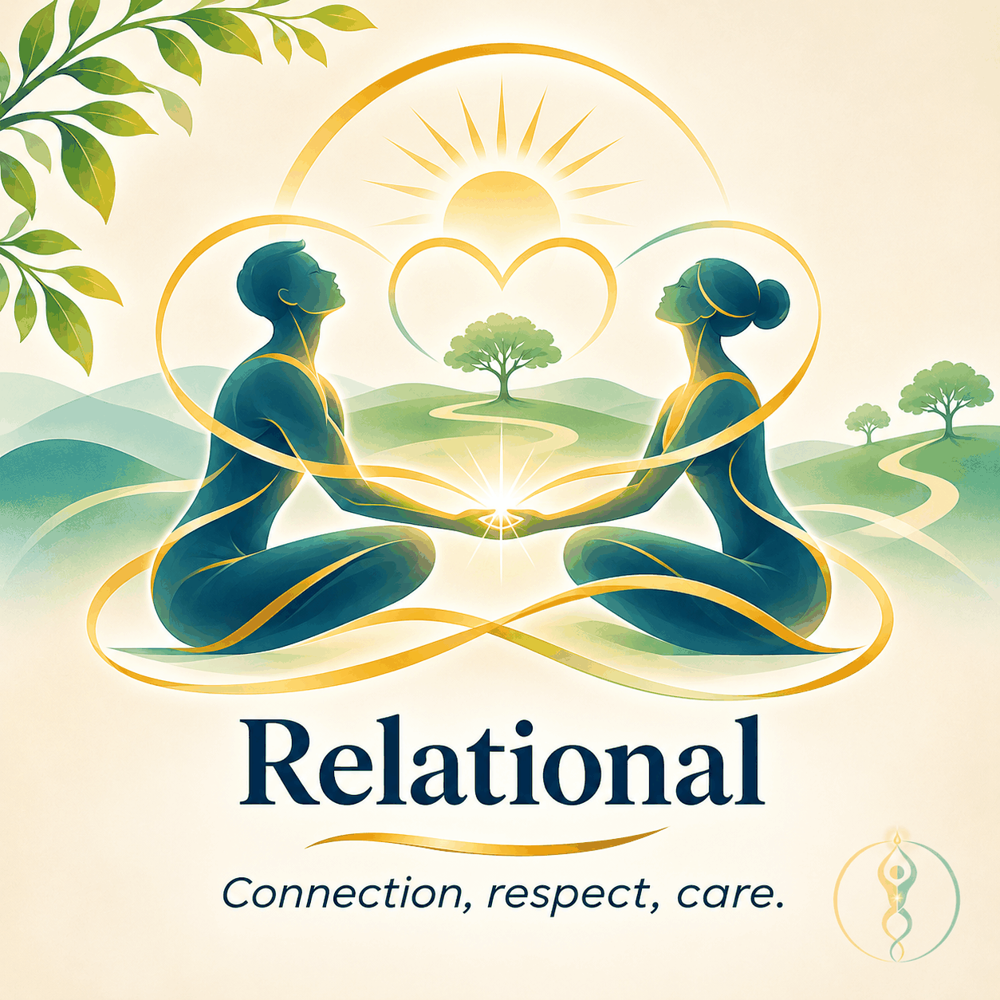
How we listen, communicate, maintain boundaries and participate in our close relationships with care.
How do my everyday actions affect those closest to me?
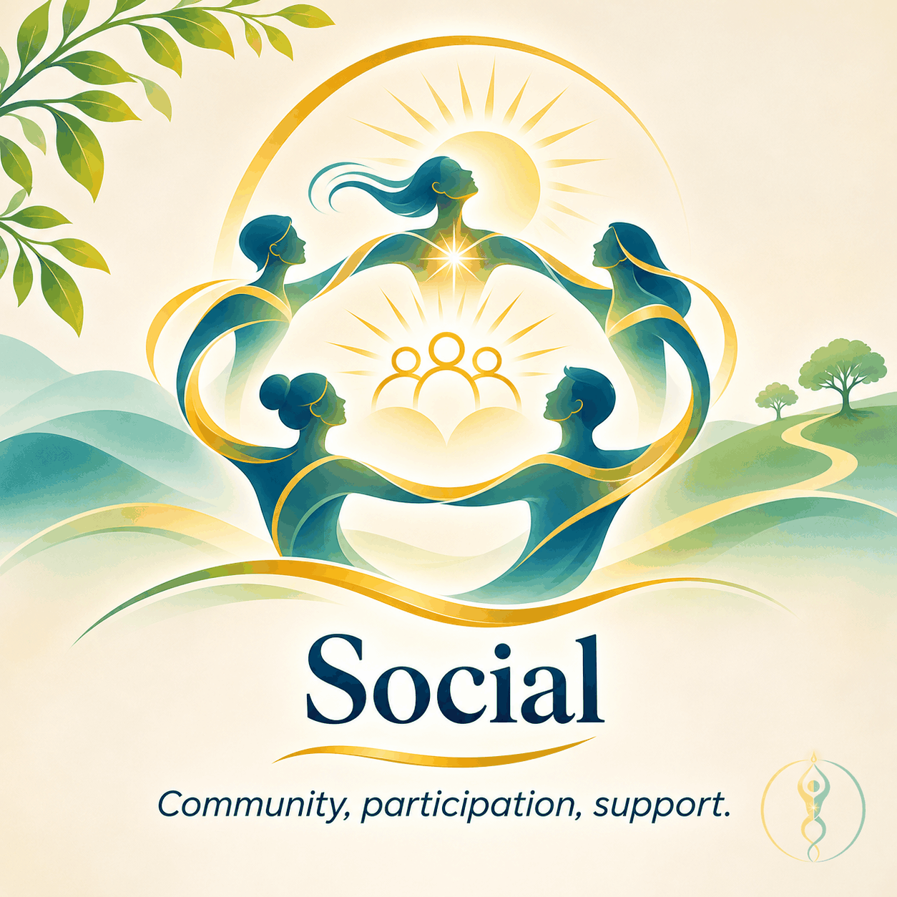
How we participate in families, work, communities and shared responsibilities, while recognising other people’s needs.
Where can I contribute meaningfully to the people around me?
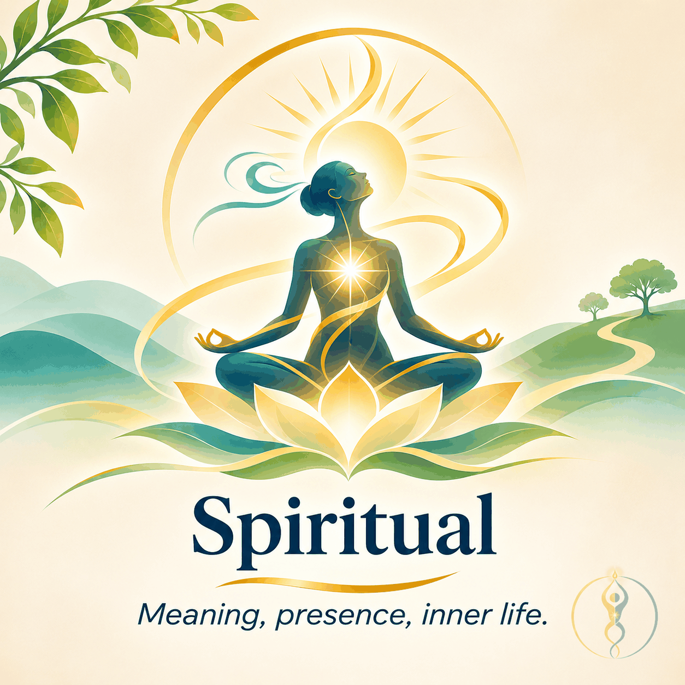
How we explore values, meaning, existence and conscious participation in life. Philosophical enquiry is guided by each person's readiness and interest, without requiring a particular belief.
What gives direction and meaning to how I live?
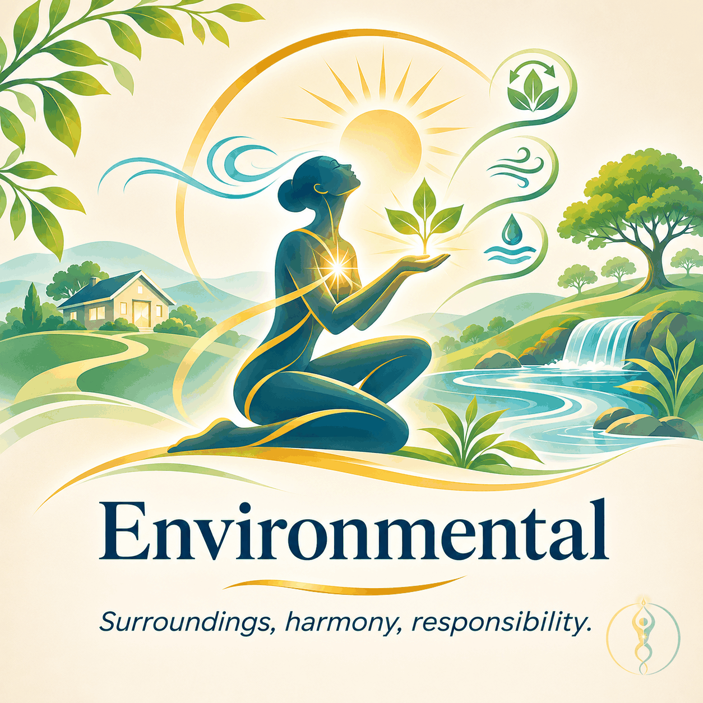
How our physical and natural surroundings influence daily life—and how our choices, habits and contributions help shape and care for those surroundings.
What can I observe, respect or improve in the environment I share?
Our physical condition can influence our thoughts and emotions. Our relationships can affect our peace of mind. Our daily actions shape the environment around us, just as our surroundings influence how we live.
These seven dimensions are interconnected. Giving attention to one may reveal what needs attention in another.
A question for everyday reflection:
When something feels out of balance in your life, have you observed how it influences other areas?
Our whole-life methodology connects physical training with mindfulness, emotional wellbeing, personal values, relationships and continuing adaptation. Yoga, fitness and meditation are techniques within the wider work.
Waking, rest, sleep, planning, realistic commitments and evening reflection.
Movement, fitness, mobility, flexibility and appropriate yoga practice.
Hunger awareness, eating patterns, hydration and suitable routine adjustments.
Meditation, natural breathing observation, reflective writing and response awareness.
Communication, personal responsibility, social connections and conscious contribution.
Yoga philosophy, values, consciousness and self-realisation as optional reflective learning, according to readiness.
What are you searching for in life? Is it connected to what your present life needs? Explore how thoughts, experiences, expectations, decisions and actions influence the direction of everyday living.
The deeper inquiry remains available for those who wish to read beyond the practical explanation on this website.
Open the full inquiryThe K-Lifestyle Framework™ respects traditional yoga and philosophical inquiry alongside practical observation and appropriately established contemporary knowledge.
Yoga philosophy connects disciplined observation with questions of attention, action, responsibility, values and acceptance. We explore these teachings through reflection and practical experience, according to each participant’s interest and readiness.
Classical yogic writings, practical observation and contemporary inquiry each offer opportunities for learning. We explain their ideas in accessible language and invite thoughtful application in everyday life.
One-Won-Us™ remains a spiritual-philosophical inquiry into our relationship with others, nature and existence—not a separate commercial coaching category. Seevan Yoga™ expresses the practice and philosophical dimensions of yoga within the wider organisation.
Explore Yoga Philosophy & Practical Application in Daily Life ↗
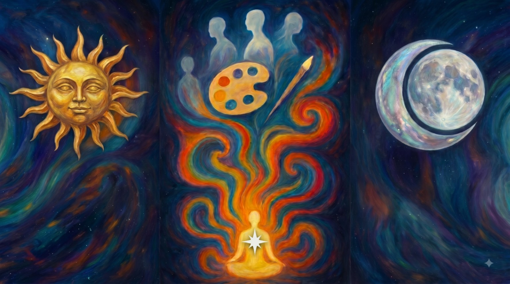
We begin by discussing present routines, responsibilities, individual abilities, priorities and relevant limitations. From there, we explore suitable ways to practise, whether through lifestyle habits, movement, yoga, reflection, meditation or communication.
Participants are encouraged to observe how practices fit their daily life, share their experience, ask questions and make thoughtful adjustments. The purpose is clarity in application and greater independence—not dependence on a fixed formula.